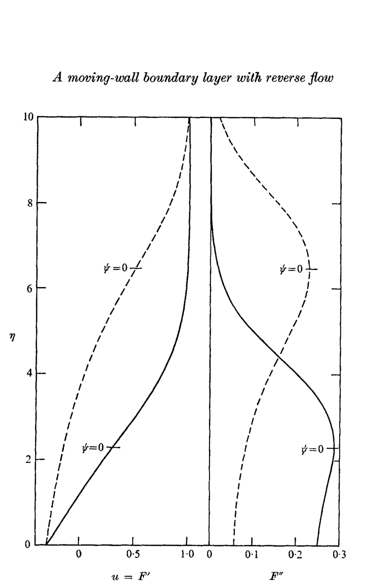
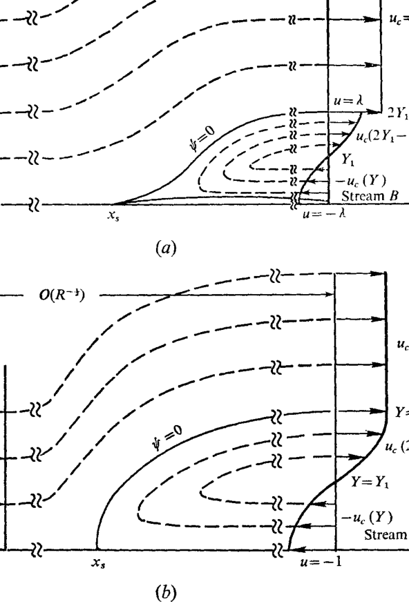
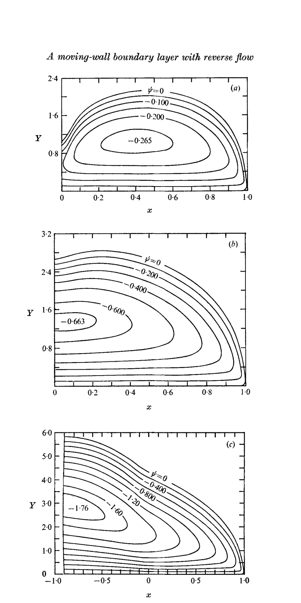
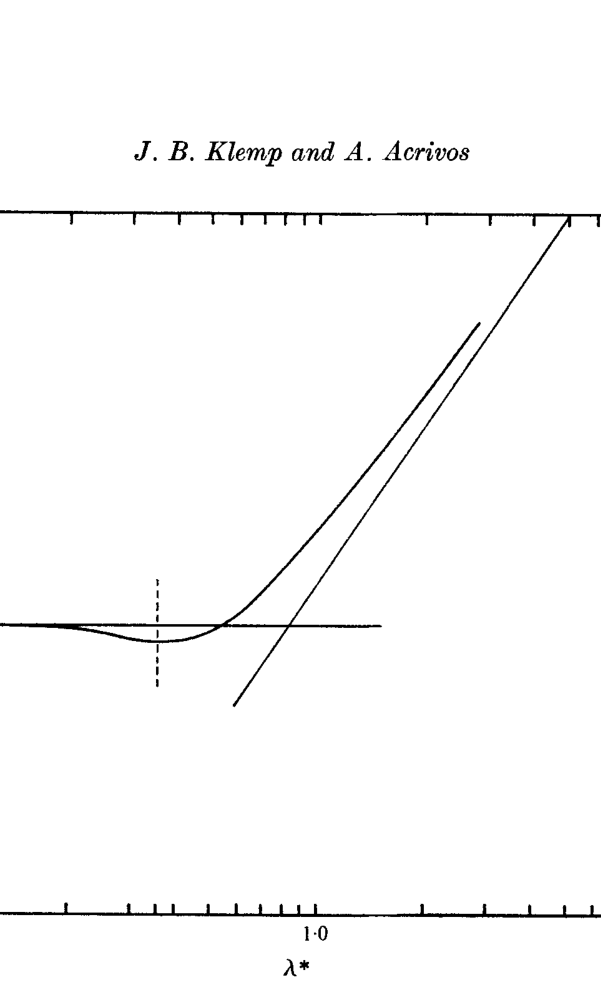

01中文摘要
研究均匀来流绕以恒定速度 λU 逆向运动的平板的高雷诺数流动。先前工作表明，当平板引起的逆流区厚度为 O(R^(−1/2)) 时，层流边界层方程在 λ<0.3541 有解。本文将分析扩展到 λ>0.3541：流场由外部均匀流、带逆流的常规边界层（x_s<x<1）和 x_s 附近 O(R^(−1/4)) 的无粘碰撞区三部分组成。证明 0<λ<1 时 x_s=0，λ>1 时 x_s<0。数值给出 0<λ<2 的流线；阻力先随 λ 减小、在 λ=0.3541 达到最小，随后单调增大，λ=2 时已接近 λ→∞ 的渐近值。
02阅读说明
期刊论文（J. Fluid Mech. 76(2), 1976, pp.363–381）。材料为 build/deep_input/1166.md 全文、图件清单与图注；公式核对使用原 PDF 的 pp.366–367、374–377（共 6 页）。扫描 OCR 把 λ 识别为 h、R^(-1/2) 识别为 R-4、F 识别为 P，本文按原式更正；高阶系数与阻尼系数在材料中不清晰，已注明。 文章类型：期刊
03一句话核心与三句话摘要
三区结构解释 λ>0.3541 移动壁反向流边界层，数值给出 0≤λ≤2 的流场与阻力。
- 对高雷诺数均匀流绕逆向来流运动的平板，λ<0.3541 时相似方程有两支解，第二支是寄生解，只有第一支能描述有限平板前缘。 原文明确
- λ>0.3541 时常规边界层在分离点附近失效，流动由外部均匀流、带反向流的常规边界层和尺度 O(R^(-1/2)) 的无黏碰撞区三部分组成。 原文明确
- 碰撞区的局部压力匹配给出 ω0=(1-γ^2)^(1/2)、α=3/2,5/2,…，并据此定出 x_s：0<λ<1 时 x_s=0，λ>1 时 x_s<0；数值结果显示阻力在 λ*=0.3541 取极小，λ→∞ 趋于 0.89λ^(1/2)。 原文明确
04核心内容清单
| 要点 | 类型 | 重要性 | 原文依据 | 属性 |
|---|---|---|---|---|
| λ*=0.3541 是相似解存在的上限；0<λ<λ* 内有两支解，第二支为寄生解。 | 理论/数值 | A | p363、p370–371；图3、图4 | 原文明确 |
| λ>λ* 时流动分为外部均匀流、常规反向流边界层和 O(R^(-1/2)) 无黏碰撞区三部分。 | 理论 | A | p363、p372；图5 | 原文明确 |
| 碰撞区压力匹配给出 ω0=(1-γ^2)^(1/2)、γ<1，且 α=3/2,5/2,…。 | 理论 | A | 式(4.7)–(4.12)，p375–376 | 原文明确 |
| 分离点判据：0<λ<1 时 x_s=0 或距前缘 O(R^(-1/2))；λ>1 时 x_s<0 且 u_c(0,t)=1。 | 理论 | A | p363、p376 | 原文明确 |
| 数值流场：λ=1 时涡心到前缘，λ=2 时 x_s=-0.9；回流泡向上游扩展更快。 | 数值 | A | 图6，p379 | 原文明确 |
| 无量纲阻力在 λ*=0.3541 取极小，λ→0 为 0.664，λ→∞ 为 0.89λ^(1/2)。 | 数值 | A | 图7，p380–381 | 原文明确 |
| 机制是碰撞区把上游影响限制在 O(R^(-1/2))，涡量沿流线守恒，压力连续性决定局部结构。 | 机制 | B | 式(4.1)–(4.11)，p372–375 | AI概括 |
| 时间相关边界层积分避免了迭代定位 u=0 曲线，x 方向中心差分可稳定处理速度变号。 | 方法 | B | §2，p366–368 | 原文明确 |
| 本文修正了文献 I 中阻力极小约 0.25 的错误，指出原因是 I 的 λ=0.3 剪应力剖面略有误差。 | 数值/更正 | B | §6，p380–381 | 原文明确 |
| 第二支相似解与 Stewartson 第二 Falkner–Skan 解在非唯一性上类似，但 λ* 处 F''(0)>0，细节不同。 | 类比 | C | §3，p370–371 | AI概括 |
05引言：研究问题与领域缺口
问题是一个长度 1 的平板置于均匀来流 U 中，板面以 λU 逆来流方向运动；R=Ul/ν≫1。此前的文献 I 只得到 0≤λ<λ*=0.3541 的相似解，并认为 λ* 以上无解。本文要回答三点：λ* 以上是否真的无解、反向流在何处脱离平板、以及整个 λ 区间的流场与阻力如何。作者指出，λ>1 时反向流可穿透到前缘上游，分离点 x_s 移到负值；λ*<λ<1 时分离点仍贴前缘或其 O(R^(-1/2)) 邻域。常规边界层方程在 x_s 附近因流向速度变号而失效，必须引入新的局部结构（p363–365）。
06流动条件与几何构型
| 项目 | 数值/描述 | 依据 | 备注 |
|---|---|---|---|
| 几何与流体 | 二维、定常、不可压缩、常物性层流；均匀来流 U 绕长度 1 的平板，前缘 x=0、后缘 x=1；零压力梯度 | §1，p363–365 | |
| 壁面运动 | 0<x<1 的板面以速度 λU 逆来流方向运动；λ≥0 为无量纲表面速度参数 | §1，p365 | |
| Reynolds 数 | R=Ul/ν≫1；反向流层厚度 O(R^(-1/2))，边界层近似适用 | §1，p365 | |
| 相似解区间 | 0≤λ<λ*=0.3541 时常规边界层方程有相似解；λ=λ* 时闭流线区刚形成 | §2–§3，p365–370 | |
| 第二相似解 | 0<λ<0.3541 时存在两支满足 F'(∞)=1 的解；第二支为寄生解，厚度随 λ→0 无界增大 | §3，p369–371；图3、图4 | |
| λ*<λ<1 的局部结构 | 三区结构；x_s=0 或距前缘 O(R^(-1/2))；γ=λ<1、ω0>0，ψ=0 流线为尖点 | §4，p372–376；图5(a) | |
| λ>1 的局部结构 | x_s<0，位于 u_c(0,t)=1 处；γ=1、ω0=0，分界流线竖直 | §4，p376；图5(b) | |
| λ→∞ 极限 | 板面边界层趋于 Sakiadis 相似解；x<0 回流区厚度按 (-x)^(1/2) 增长 | §4–§6，p376–380 | |
| 数值网格与时间步 | Δx=0.02、Δη=0.1、Δt=2.5×10^(-3)；λ<1 取 L=6，λ>1 取 L=10；横向 61 点；下游边界取在后缘外 5 个网格点 | §2，p366–367 | |
| 计算工况 | λ=0.1、0.2、0.3 与文献 I 对比；λ=0.5、1.0、2.0 给出流场结构；阻力计算覆盖 0≤λ≤2 | §2、§5–§6，p367–368、377–380 | |
| 收敛与校验 | t≈6 时解收敛到 5 位小数；与 I 的 λ=0.1–0.3 结果相差不到百分之几 | §2，p367–368 | |
| 板外壁面条件 | x<0 与 x>1 的壁面取零剪应力 ∂u/∂Y=0，V=0；远场 u→1；平板段 u=-λ | 式(5.3)，p377 | 式(2.3) 的 OCR 与式(5.3) 表述略有差异，本文采用 (5.3) 的写法。 |
07核心现象与关键参数
| 参数 | 定义 | 数值 | 关系/说明 | 依据 |
|---|---|---|---|---|
| λ | 壁面运动速度与来流速度之比（无量纲表面速度参数） | 计算范围 0–2；临界值 λ*=0.3541 | λ<λ* 有相似解；λ>λ* 出现碰撞区与三区结构 | 式(1.1)，p365；§3，p370 |
| λ* | 相似解存在的最大 λ | 0.3541 | λ=λ* 时闭流线区刚出现，阻力取极小 | 摘要，p363；§3，p370；图7，p380 |
| R | Reynolds 数 Ul/ν | ≫1 | 反向流层与碰撞区尺度均为 O(R^(-1/2)) | §1，p365 |
| x_s | ψ=0 流线的脱离点（分离点） | 0<λ<1 时 x_s=0；λ=1 时涡心到前缘；λ=2 时 x_s=-0.9 | 由碰撞区局部解与 u_c(0,t) 判据确定 | 摘要，p363；§4，p376；图6，p379 |
| γ | γ=u_c(0,t)，分离点处反向流在对称线上的无量纲速度 | λ<1 时 γ=λ<1；λ>1 时 γ=1 | γ<1 要求 ω0>0 的尖点解；γ=1 对应竖直分界流线 | 式(4.3)、(4.11)，p374–375；p376 |
| ω0 | ω0=(∂u_c/∂Y) 在 Y=0 的值，表征碰撞区壁面涡量 | ω0=(1-γ^2)^(1/2) | 压力匹配 q_A^2-q_B^2=1-γ^2 的必要条件 | 式(4.7)、(4.11)，p375 |
| α | 分界流线尖点 Y∝X^α 的指数 | α=3/2,5/2,… | X→0 时流线为尖点；α 不唯一 | 式(4.10)–(4.12)，p375–376 |
| F''(0) | 壁面无量纲剪应力（与壁面剪切成正比） | λ=λ* 时 F''(0)>0 | 区别于 Stewartson 第二 Falkner–Skan 解在 β=-0.1988 处的情形 | §3，p370–371 |
| 无量纲阻力 | 文中图7的阻力标度（具体积分定义文中未给出） | λ→0 为 0.664；λ→∞ 为 0.89λ^(1/2)；λ=0.3541 取极小 | λ=2 时已接近高 λ 渐近值 | 图7，p380–381 |
| 数值分辨率 | 有限差分的空间/时间步长与横向点数 | Δx=0.02、Δη=0.1、Δt=2.5×10^(-3)、61 点；L=6 或 10 | 用于 §2 与 §5 的两套格式 | §2，p366–367 |
08方法与数据
三条线并用。第一，对 0≤λ<λ* 把边界层方程化为相似方程 2F'''+FF''=0，边界条件 F(0)=0、F'(0)=-λ、F'(∞)=1，并用初始值问题而不是边值问题求第二支解（式(1.1)，p365；§3，p369–371）。第二，对 λ>λ* 做匹配渐近：在 x_s 附近取 X=R^(1/2)(x-x_s)、Y=R^(1/2)y，碰撞区尺度 O(R^(-1/2))，区内用涡量守恒方程 ∇²ψ=-ω(ψ)（式(4.1)，p372），把碰撞区解与上下游边界层匹配（式(4.2)，p373）。第三，用时间相关边界层方程推进到定常：式(2.1)–(2.4) 的相似变量与初边值，x 方向中心差分、时间 leapfrog、η 方向隐式并三对角求解，另加与 ∂²u/∂x² 成正比的小阻尼（§2，p366–368）；λ>λ* 时改用 x-Y 显式格式（式(5.1)–(5.3)，p377）。网格 Δx=0.02、Δη=0.1、Δt=2.5×10^(-3)，λ<1 取 L=6、λ>1 取 L=10，横向 61 点。
| 项目 | 内容 | 依据 | 备注 |
|---|---|---|---|
| 相似变换 | 取 ψ=(x/R)^(1/2)F(x,η)、η=Y/x^(1/2)、Y=R^(1/2)y，把前缘附近化为相似方程 | 式(2.1)，p366 | |
| 相似方程求解 | 解 2F'''+FF''=0，F(0)=0、F'(0)=-λ、F'(∞)=1；用初始值问题扫描 F''(0) 以获得多支解 | 式(1.1)，p365；§3，p369–370 | |
| 匹配渐近/三区分析 | 把流动分为外部均匀流、x_s<x<1 的常规反向流边界层、x_s 附近 O(R^(-1/2)) 的无黏碰撞区 | §1、§4，p363、p372 | |
| 碰撞区控制方程 | 用涡量守恒方程 ∇²ψ=-ω(ψ) 描述碰撞区，涡量沿流线守恒 | 式(4.1)，p372 | |
| 局部复变解 | 对流 A 解 Laplace 方程，对流 B 取线性剪切 -γ+ω0y，得到 q_B=(1/2)ω0X^α 与 q_A=a0{1-αX^(α-1)cot[(α-1)π]+…} | 式(4.3)–(4.10)，p374–375 | |
| 压力匹配 | 用 Bernoulli 方程要求 q_A^2-q_B^2=1-γ^2，从而定出 ω0=(1-γ^2)^(1/2) 与 α 的允许值 | 式(4.11)，p375 | |
| 时间相关边界层积分 | 在 x 方向用中心差分、时间用 leapfrog、η 方向隐式并用三对角求解；加小阻尼项以稳定计算 | §2，p366–368 | 阻尼系数的具体数值材料中不清晰。 |
| λ>λ* 的显式格式 | 改用 x-Y 变量的显式时间推进（式(5.1)–(5.2)），初边值由 (5.3) 给出；若 u*<-1 则在上游加一列，使 x_s 可向上游移动 | §5，p377–378 | |
| 碰撞区边界条件 | 由 x_s 下游前两个网格点外推 u_c(Y,t)，按式(4.2) 组成碰撞区出口速度剖面，再作为 x>x_s 的边界条件 | 式(4.2)、(5.3)，p373、p377–378 | |
| 验证与后处理 | 与文献 I 的 λ=0.1–0.3 结果对比；绘制流线/闭流线区并积分壁面剪应力得到阻力 | §2、§6，p367–368、p379–381 | 阻力积分公式文中未给出。 |
09核心推导与公式
先用相似解处理 λ<λ*；对 λ>λ*，在分离点 x_s 附近构造 O(R^(-1/2)) 无黏碰撞区，用涡量守恒和两侧压力连续确定局部速度剖面与 x_s，再把碰撞区出口剖面作为下游常规边界层的边界条件。
关键假设
- 二维、定常、不可压缩、常物性、零压力梯度层流；R=Ul/ν≫1。
- 边界层近似成立；反向流层厚度 O(R^(-1/2))，碰撞区在流向与法向均为 O(R^(-1/2))。
- 碰撞区内惯性主导、黏性可忽略，涡量沿流线守恒；外流均匀。
- 只保留匹配渐近首阶，忽略 O(R^(-1/2)) 的黏性修正。
- 分离点取 ψ=0 流线与壁面的交点；碰撞区两侧速度剖面由上游/下游边界层提供。
- 数值上以时间相关方程推进到定常，初值取全场均匀流。
推导过程
在前缘附近假设自相似，把边界层方程化为 Falkner–Skan 型方程；壁面运动给出 F'(0)=-λ，外流给出 F'(∞)=1。
λ→∞ 时板面附近的反向流占主导，外流条件变为 F'(∞)=0，方程退化为 Sakiadis 相似问题。
离开前缘后取 ψ=(x/R)^(1/2)F(x,η)、η=Y/x^(1/2)、Y=R^(1/2)y，把方程写成含 x 的抛物型方程；初值取相似解 F'(η)。
在 x_s 附近取 X=R^(1/2)(x-x_s)、Y=R^(1/2)y；碰撞区 O(R^(-1/2))，区内忽略黏性，涡量沿流线守恒。
把 x_s 处的速度剖面按奇对称延拓：0<Y≤Y1 为 -u_c，Y1<Y≤2Y1 为 u_c(2Y1-Y)，再往上接外部均匀流。
流 B 取线性剪切 u_B=-γ+ω0y；流 A 无旋，解 Laplace 方程。由 X→0 的奇性得 q_B=(1/2)ω0X^α，q_A=a0{1-αX^(α-1)cot[(α-1)π]+…}。
Bernoulli 方程要求分界流线两侧压力相等，即 q_A^2-q_B^2=1-γ^2。要与 q_B 的 X^α 项平衡，必须有 ω0=(1-γ^2)^(1/2)、γ<1，且 α=3/2,5/2,…；分界流线写成 Y=X^α(1+b1X+b2X^2+…)。
若 x_s<0，则 x_s 上游对称线上 ω0=0，稳态碰撞只有在 γ=u_c(0,t)=1 时才可能；故 x_s<0 仅当 λ>1，位置由 u_c(0,t)=1 定出。若 λ<1，则 γ=λ<1、ω0>0，x_s=0 或距前缘 O(R^(-1/2))。
λ>λ* 时改用 x-Y 变量的显式格式，以 (5.3) 为初边值；每步由 x_s 下游前两个网格点外推 u_c，按 (4.2) 更新碰撞区出口剖面；若 u*<-1 则在上游加一列，让 x_s 能继续向上游移动。
对 0≤λ≤2 积分壁面剪应力得阻力曲线；λ→0 退化为 Blasius 值 0.664，λ→∞ 用 Sakiadis 解得 0.89λ^(1/2)。
适用边界：推导只到匹配渐近首阶，碰撞区未数值求解；α 的多个允许值没有唯一选择准则；b_k、a1–a3 与阻尼系数未能从扫描材料完整恢复；阻力积分定义未给出；没有实验验证。
10结果：主要发现与关键证据
相似解在 0<λ<λ*=0.3541 内两支并存，第二支厚度随 λ→0 无界增大，呈寄生性质（图3、图4，p370–371）。λ>λ* 时出现三区结构；碰撞区局部分析要求 γ=u_c(0,t)≤1、ω0=(1-γ^2)^(1/2)、α=3/2,5/2,…，分界流线为 Y=X^α(1+b1X+…) 的尖点（式(4.7)–(4.12)，p375–376）。由此得 x_s 判据：0<λ<1 时 x_s=0 或距前缘 O(R^(-1/2))；λ>1 时 x_s<0，位于 u_c(0,t)=1 处；λ=1 时涡心刚到前缘，λ=2 时 x_s=-0.9（图5、图6，p373、p379）。数值流场显示回流泡向上游增长更快，远上游厚度按 (-x)^(1/2) 增长；λ→∞ 时板面边界层趋于 Sakiadis 解，按 (1-x)^(1/2) 变化（p379–381）。无量纲阻力从 λ=0 的 Blasius 值 0.664 下降，在 λ=0.3541 取极小后上升，λ=2 已接近 0.89λ^(1/2)（图7，p380–381）。
| 发现 | 证据 | 证据类型 | 强度 | 位置 | 属性 |
|---|---|---|---|---|---|
| 0<λ<0.3541 时相似方程不唯一：除文献 I 的解外还有一支寄生解。 | 图3 给出 F''(0) 随 λ 的两支分支；图4 在 λ=0.3 对比两支的速度与剪应力剖面；第二支厚度随 λ→0 无界增大。 | 理论/数值 | 强 | §3，p369–371；图3、图4 | 原文明确 |
| λ*=0.3541 是相似解存在的上限；超过后必须引入非相似的三区结构。 | 图3 显示 λ>λ* 无满足 F'(∞)=1 的解；摘要明确说 λ>0.3541 不能用常规边界层处理。 | 理论 | 强 | 摘要，p363；§3，p370 | 原文明确 |
| λ>λ* 的流动由外部均匀流、常规反向流边界层和 O(R^(-1/2)) 无黏碰撞区三部分组成。 | 图5 给出碰撞区几何；式(4.1) 为区内涡量守恒方程。 | 理论 | 强 | 摘要，p363；§4，p372–373；图5 | 原文明确 |
| 碰撞区压力匹配要求 γ≤1、ω0=(1-γ^2)^(1/2)，且 α 只能取 3/2,5/2,…。 | 式(4.7)、(4.10)、(4.11) 联立；α 为整数时需把 X^(α-1) 换成 X^(α-1)lnX，文中说明该情形另处理。 | 理论 | 强 | 式(4.7)–(4.12)，p375–376 | 原文明确 |
| 分离点判据：0<λ<1 时 x_s=0 或距前缘 O(R^(-1/2))；λ>1 时 x_s<0，位于 u_c(0,t)=1 处。 | λ<1 属于 case 2（γ=λ<1、ω0>0）；λ>1 时只有 γ=1 才能稳态，故 x_s 由 u_c(0,t)=1 定位。 | 理论 | 强 | §4，p376；摘要，p363 | 原文明确 |
| 数值流场显示回流泡随 λ 增大向上游扩展：λ=1 时涡心到前缘，λ=2 时 x_s=-0.9。 | 图6(a)-(c) 分别给出 λ=0.5、1.0、2.0 的闭流线区；图注明确 (c) 中 x_s=-0.9。 | 数值 | 强 | 图6，p379；§6，p378–379 | 原文明确 |
| 回流区厚度在上游按 (-x)^(1/2) 增长；λ→∞ 时板面边界层按 (1-x)^(1/2) 趋于 Sakiadis 解。 | 图6(c) 与 §6 的渐近讨论；作者把上游增长与高 λ 板面解作定量比较。 | 数值/渐近 | 中 | §6，p379–381 | 原文明确 |
| 无量纲阻力随 λ 先减后增，在 λ*=0.3541 取极小；λ→0 为 0.664，λ→∞ 为 0.89λ^(1/2)。 | 图7 的阻力曲线与两条渐近线；λ=2 已接近高 λ 渐近值。 | 数值 | 强 | 图7，p380–381 | 原文明确 |
| 文献 I 中阻力极小约在 λ=0.25 的结果有误，原因是 I 使用的 λ=0.3 剪应力剖面略有误差。 | 本文重新计算 0<λ<0.3541 的阻力，极小移到 λ=0.3541，并在 §6 明确说明与 I 的差异来源。 | 数值/更正 | 中 | §6，p380–381 | 原文明确 |
11机制解释与论证链
核心机制是反向流与外部均匀流在 x_s 处的无黏碰撞。λ>λ* 时反向流有足够动量穿出前缘，分离点移到 x_s≤0；碰撞区厚度 O(R^(-1/2))，惯性主导，涡量沿流线守恒。局部解把下游反向流近似为 u_B=-γ+ω0y、上游流近似为 u_A=1，并要求分界流线两侧压力连续，即 q_A^2-q_B^2=1-γ^2。这个条件只有在 γ<1 且 ω0=(1-γ^2)^(1/2) 时才能满足，且分界流线取尖点 Y∝X^α（α=3/2,5/2,…）。当 λ<1 时碰撞区贴在前缘，γ=λ<1，必须有非零壁面涡量；当 λ>1 时 x_s<0，γ=1、ω0=0，分界流线变为竖直。碰撞区把上游影响截断在 O(R^(-1/2)) 内，因此无需解整个碰撞区即可用式(4.2) 的出口剖面推进下游边界层。
12讨论：结论、贡献与局限
作者把机制归为碰撞区对上游的信息传递：反向流把动量带到前缘上游，必须在 x_s 处与外部均匀流碰撞并转向；碰撞区厚度 O(R^(-1/2))，其中涡量沿流线守恒，因而局部解由两侧速度剖面和压力连续性决定。λ<1 时碰撞区贴在前缘，γ=λ<1，需非零壁面涡量 ω0 才能形成尖点；λ>1 时 x_s<0，γ=1，ω0=0，分界流线竖直。作者还把第二支相似解与 Stewartson 的第二 Falkner–Skan 解类比，指出两者在 β=-0.1988 附近都出现非唯一性，但本文 λ* 处 F''(0)>0，与 β=-0.1988 的情形不同。讨论也承认局部分析只到首阶，α 可从 3/2,5/2,… 中取多个值，b_k 需由整体解确定，碰撞区本身没有数值求解（p376–381）。
作者结论
本文把移动壁反向流边界层从 λ<0.3541 扩展到整个 λ≥0 区间。结论是：λ<λ* 时相似解不唯一，第二支为寄生解；λ>λ* 时流动由三区组成，分离点由 O(R^(-1/2)) 无黏碰撞区的压力匹配定位，x_s 在 λ<1 时贴前缘、在 λ>1 时移到上游；数值上回流泡随 λ 增大向上游扩展，阻力在 λ*=0.3541 取极小，并在 λ→∞ 趋于 0.89λ^(1/2)。作者认为这套分析可推广到其他高雷诺数、含回流分离的边界层问题。
主要贡献
- 把移动壁反向流边界层的解从 λ<0.3541 扩展到 λ≥0 的整个范围。
- 提出并验证了 O(R^(-1/2)) 无黏碰撞区的三区匹配结构，给出 x_s 的解析判据。
- 用时间相关边界层积分得到 λ=0.5、1.0、2.0 的流场与 0≤λ≤2 的阻力曲线，并修正了旧解的阻力极小位置。
局限与未解决问题
第一，理论只处理二维、定常、不可压缩、常物性、零压力梯度的层流，R→∞ 且只取匹配渐近首阶；碰撞区本身没有数值求解。第二，局部解允许 α=3/2,5/2,… 多个值，b_k 与最终选哪个 α 需由整体解确定，文中未给出选择准则。第三，式(4.12) 的高阶系数 a1、a2、a3 与 §2 的阻尼系数在扫描材料中不清晰，无法逐项复核。第四，阻力积分定义与数值细节文中未提及，只给出图7 的曲线与两条渐近值。第五，没有实验验证，数值仅与文献 I 的旧解对比。
13对高速流动与工程的意义
这是较早把无黏碰撞区显式接入高雷诺数边界层分离问题的完整分析：它解释了为什么 λ* 以上常规边界层无解、分离点为何能跑到前缘上游，并给出可计算的 x_s 判据与全场数值解。文中关于非唯一相似解、Stewartson 型第二解和碰撞区尖点的讨论，对后来黏性-无黏干扰、分离泡上游影响和移动壁/回流边界层研究具有方法学价值。
14核心图件




15可引用原文素材
| 原文短句 | 可支持的观点 | 位置 | 使用建议 |
|---|---|---|---|
| “three overlapping domains” | 三区结构是全文核心结论。 | 摘要，p363 | 核心概念 |
| “an inviscid collision region” | O(R^(-1/2)) 碰撞区是 λ>λ* 的关键新结构。 | 摘要，p363 | 核心概念 |
| “x_s = 0 for 0 < λ < 1” | 分离点判据的下半支。 | 摘要，p363 | 定量结论 |
| “is not unique” | 相似解在 0<λ<λ* 内不唯一。 | §3，p369 | 非唯一性 |
| “two solutions exist” | 图3 的两支解。 | §3，p370 | 非唯一性 |
| “only if λ > 1” | 分离点跑到前缘上游的充分条件。 | §4，p376 | 判据 |
| “minimum at λ = 0.3541” | 阻力极小与 λ* 重合。 | §6，p381 | 定量结论 |
| “0.89λ^(1/2)” | 高 λ 阻力渐近。 | §6，p381 | 定量结论 |
16最终核验
| 核验项 | 结论 |
|---|---|
| 仅基于全文 | 是。仅使用 build/deep_input/1166.md 的全文、图件清单和图注，以及原 PDF 的 6 页公式核对；未引入外部文献、教科书推导或未给出的数值。 |
| A 级要点有依据 | 是。A 级要点均给出式号、页码或图号：λ*=0.3541（p363、p370、图7）、三区结构（p363、p372）、(4.7)–(4.12)（p375–376）、x_s 判据（p376）、图6（p379）、图7（p380–381）。 |
| 属性标注 | 是。three_sentence、findings、core_points 均带 attr；正文叙述中凡由作者结果直接摘取者标原文明确，跨段归纳标 AI概括，由物理图像外推者标 AI推断。 |
| 覆盖范围 | bundle 共 885 行，已从头读到 EOF；§1–§6、摘要、图注、图件清单均覆盖。公式核对读取 PDF pp.366–367、374–377（6 页），与式(1.1)、(2.1)–(2.4)、(4.1)–(4.12)、(5.1)–(5.3) 对照。 |
| 无编造 | 未编造页码、图号、公式或数据。扫描 OCR 的 λ→h、R^(-1/2)→R-4、F→P 已按上下文更正；高阶系数 a1–a3、阻尼系数、阻力积分定义在材料中不清晰，均写文中未提及或无法确认，没有补写。 |
需回原文确认
- α=3/2,5/2,… 中究竟哪一个被整体解选中？文中说 3/2 最可能，但没有给出选择准则。
- 式(4.12) 的高阶系数 a1、a2、a3 与 b_k 的具体数值在扫描件中不清晰，能否从原 PDF 完整恢复？
- §2 时间推进所加阻尼项的函数形式与系数未在材料中给出，它是否影响 λ 接近 λ* 时的收敛路径？
- 碰撞区内部流场从未被数值求解，式(4.2) 的出口剖面外推误差如何随 R 变化？
- λ>1 时 x_s<0，但上游边界取在哪里、如何保证解与 x_s 位置无关？文中只说在上游加一列。
- 高 λ 渐近 0.89λ^(1/2) 的推导细节与适用阶数文中未展开。
- 结果能否推广到有限 R、非定常或存在压力梯度的情形？文中只给出定性期望。
17关联文献
依据标签、板块、构型与作者脉络自动关联，可据此追踪同一问题的前序与后续工作。
18引用格式
选择期刊风格后复制；出处保留原刊名。BibTeX 可直接用于 LaTeX。
引用格式
Klemp, J. B. & Acrivos, A. 1976 A moving-wall boundary layer with reverse flow. Journal of Fluid Mechanics. https://doi.org/10.1017/s0022112076000670
PDF上传 PDF 并更新本页
本页缺少全文、摘要或图件时，可在浏览器本地补入 PDF。解析完全在本机完成，不上传网络；完成后会更新本页的 PDF 打开链接、原摘要、IMRaD 机器抽取、关键句与含图页面。复杂的公式语义与中文深度解读仍以原文和既有精读记录为准。
Zotero 笔记摘录
对于逆向运动平板，存在双解机制： 运动速度小于临界值时，回流区在平板表面上方，从前缘到后缘； 运动速度等于临界值时，定性上流动结构跟小于临界值时一致，但是前缘附近方程失效，此时Blasuis方程无解； 运动速度大于临界值的时候，分离点位于平板上游，回流区延申到平板前方，此时才是完整失效。 当运动速度等于2的时候，阻力接近远大于1的渐近解